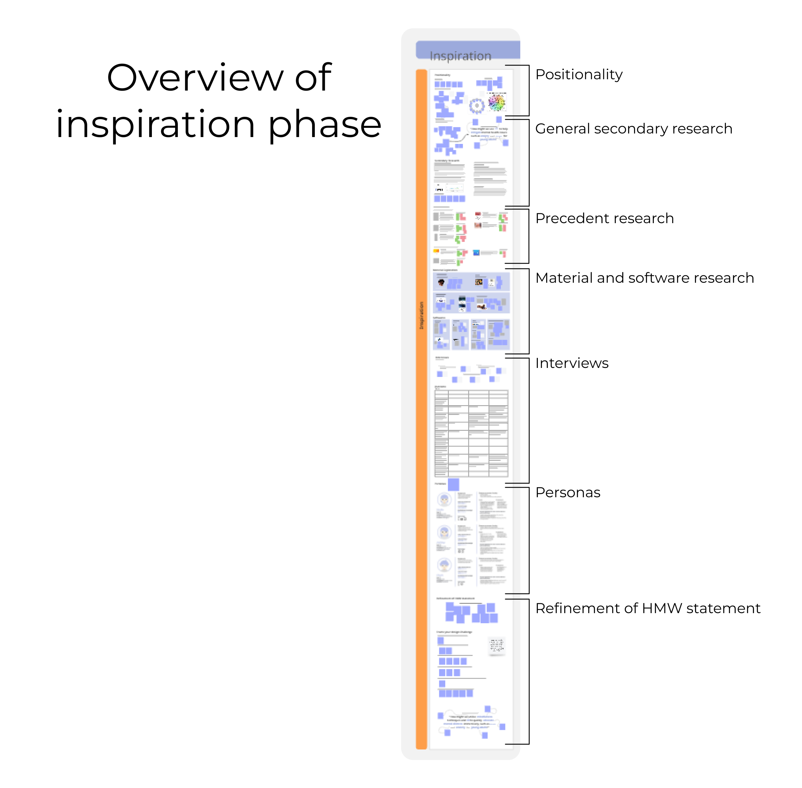
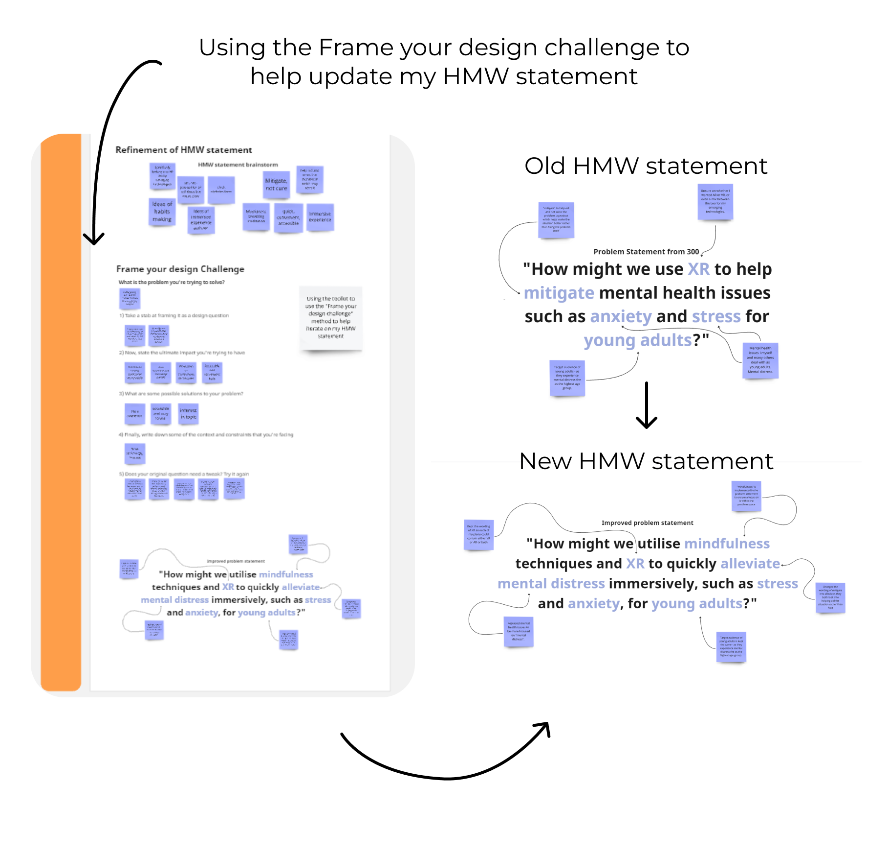

Blog 7 | Inspiration phase reflection/overview
Design 302 | Date: 09/09/24 (Monday)
This blog will look into doing a general overview reflection over the whole of my inspiration phase within my project. Looking back in general, to see what I learned, felt, and did during this phase. This reflection will be done following the “What? So what? Now what?” framework.
What?
A couple of weeks ago, I finished the first phase of my chosen design process, the inspiration phase. I had looked into positionality, secondary research, precedent research, material and software research. I interviewed my cohort to gain insights into young adults, their thoughts and feelings on mindfulness, and any potential experiences they might have. From these interviews, I created personas to help me in my next phase and to provide a guide of what my target audience wants and needs. To help aid in implementing my concepts better. I ended my inspiration phase by refining my how might we statement. Updating and changing my how might we statement hustling the IDEOs toolkit method of “Frame your design challenge” to aid me.
I had felt heavily unsure throughout most of this first phase, and from my previous experiences working with a design process, I’ll often find the first phase the hardest to tackle. Despite this, the proposal refinement assignment from 301 helped me within this phase as I was able to plan out my project with the help of a timeline and a list of what needed to be done. Once I had started on the assignment, the rest of the inspiration phase went smoothly.
Figure 1.
An overview of my Miro board for the inspiration phase

Note. A graphic that showcases an overview of the authors Miro board for the inspiration phase, with it being split up in sections
So what?
Overall I feel like the outcome of this phase was well done, and I’m generally happy with its outcome. I felt like I was able to explore what I needed and gain the information I needed for my project. Often, the first phase is the hardest, and I believe its due to something along the idea of “Blank canvas paralysis” (Blank Canvas Paralysis, n.d.).
Having nothing on the miro board makes it hard to start on the phase, as I’m unsure of what to do and start from. From looking into this idea, I have also learnt that another reason would be fear, fear of starting something, because if I don’t do it to the best of my ability, it in itself is a failure. When looking into my earlier blog posts and weekly reflections, I had often said I was unsure and uncertain about where to start, but many of these thoughts of my feelings could just be excuses for why I hadn't started on a section due to fear.
As said before, I found the assignment from 301 to be heavily helpful in this phase. It gave me a plan of what needed to be done so I could at least plan out my miro, have less of a blank space on the miro, and finish the phase successfully.
I found that my chosen design methodology was heavily effective during this phase, I used all the tools I had stated I would previously and used the “Frame your design challenge” method straight from the IDEO HCD toolkit, which helped me immensely in updating my How might we statement.
The toolkit mindsets come to mind when reflecting back on this phase, especially “Optimism” and “Embracing Ambiguity” both of which would have helped aid me in this phase had I fully implemented them and had these mindsets when I was doing the inspiration phase. Often I overlook these mindsets and forget about them from time to time.
Figure 2.
Using the frame my design challenge tool

Note. A graphic that showcases using the frame my design challenge tool from the IDEO HCD toolkit and how it had changed the author's HMW statement. Taken from the author's Miro board.
Now what?
I’ll keep in mind the IDEO HCD toolkit mindsets as an essential part of the design methodology when creating and designing. These mindsets will help aid me in my process and could help me with roadblocks as well as the tools given in the toolkit. I’ll keep in mind of these by utilising sticky notes and placing them within my Miro board on sections in which I think the more appropriate mindset is needed in a section. Say I was starting to iterate on my work, I’ll make sure to label a sticky note near the phase of the “iteration” and the “making” mindset. I believe this will help as I refer to my Miro board often when doing 301 to help document my process. However, I don’t look back on the design methodology section of my miro,l but I look at my main design process section, which is a work in progress, having reminders right on the section of the miro in which I am looking will help give me constant reminders of these mindsets.
Had I kept these mindsets in mind and utilised them, my fear of starting and having a ‘Black canvas paralysis’ could've been avoided. I also learnt more about this idea, and so knowing the why and causes of this phenomenon, as I approach new projects in the future, I’ll keep in mind that not starting out of fear of failing is failing in itself.
References
Blank Canvas paralysis (n.d.). The Modern Nomad.
https://www.themodernnomad.com/blank-canvas-paralysis/#:~:text=Whenever%20you%20are%20about%20to,ways%20to%20deal%20with%20it.
J, D. (1994). Reflective practice for practise.PubMed, 14 47–50.
https://pubmed.ncbi.nlm.nih.gov/8303152
Rolfe, G., Freshwater, D., & Jasper, M. (2001). Critical Reflection for Nursing and the Helping Professions: A User’s Guide. Palgrave MacMillan.
What? So what? Now what? (2020, January 30). The University of Edinburgh.
https://www.ed.ac.uk/reflection/reflectors-toolkit/reflecting-on-experience/what-so-what-now-what